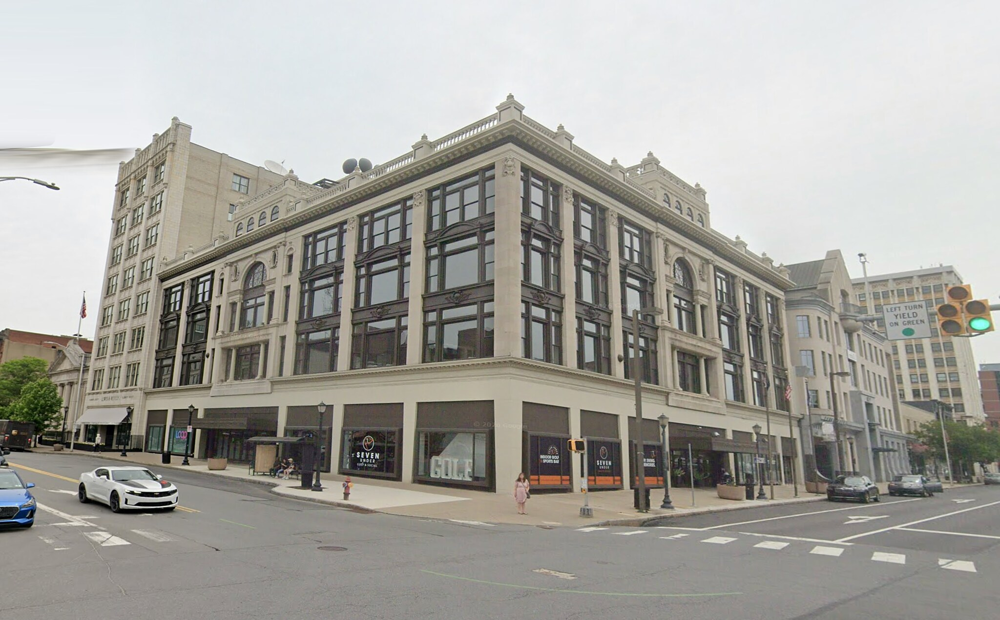
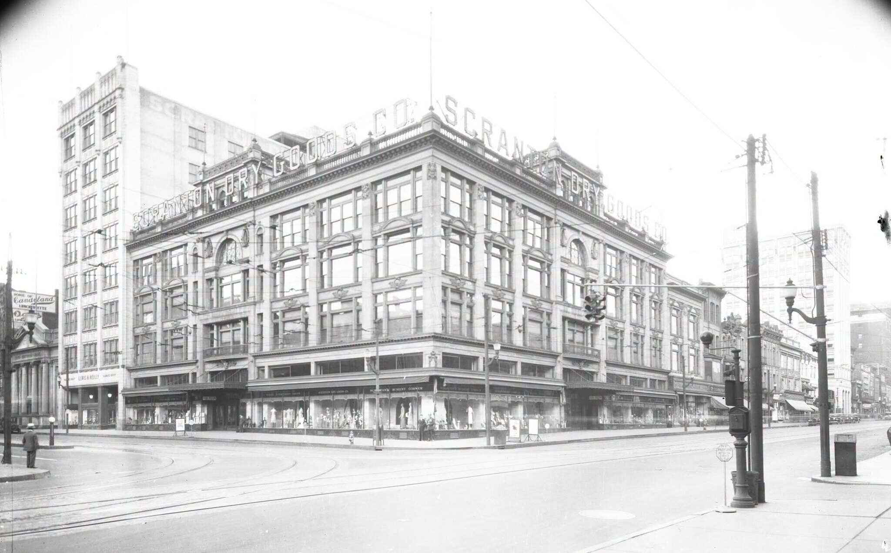

Scranton, Pennsylvania · Then & Now
Scranton
Dry Goods Co.
Signage over the display windows called this Scranton’s Busiest Corner — Lackawanna at Wyoming, within a block of the department stores, theatres and restaurants. The building is still standing, cornice and all. The roof signs and the streetcar tracks are not.


Drag to compare · arrow keys to scrub
ThenGlass plate negative, 1920s. Scranton Dry Goods Co., Lackawanna Avenue at Wyoming Avenue.
NowGoogle Street View, captured May 2026. Imagery © Google.
On the fitThe plate was shot from the sidewalk, further back than Street View can stand, so this pair carries a half-strength perspective correction. A full one lined the building up to within 2% of the frame but visibly stretched everything around it; this trades that back for about 3.5% and keeps the proportions honest.